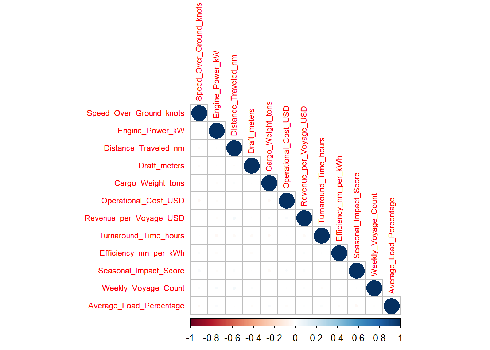
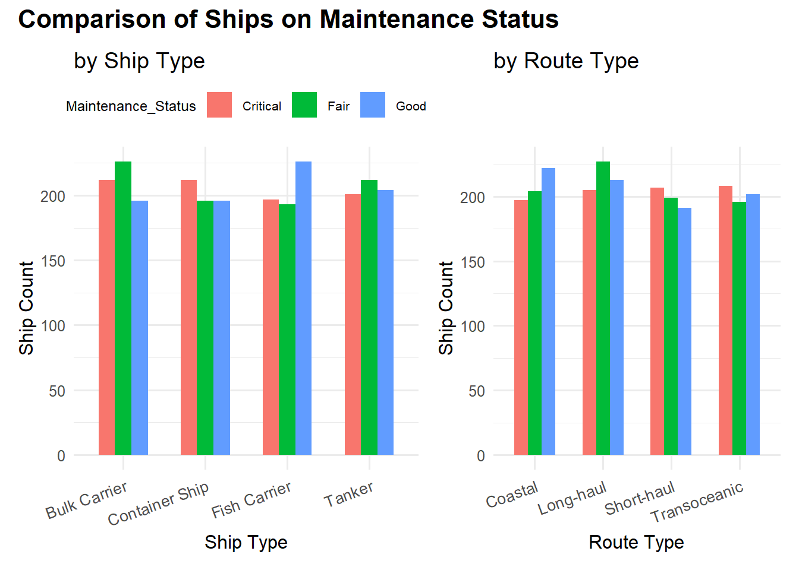
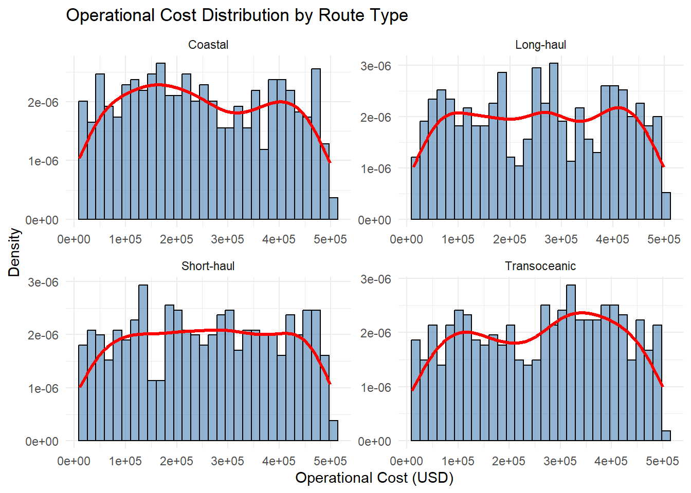
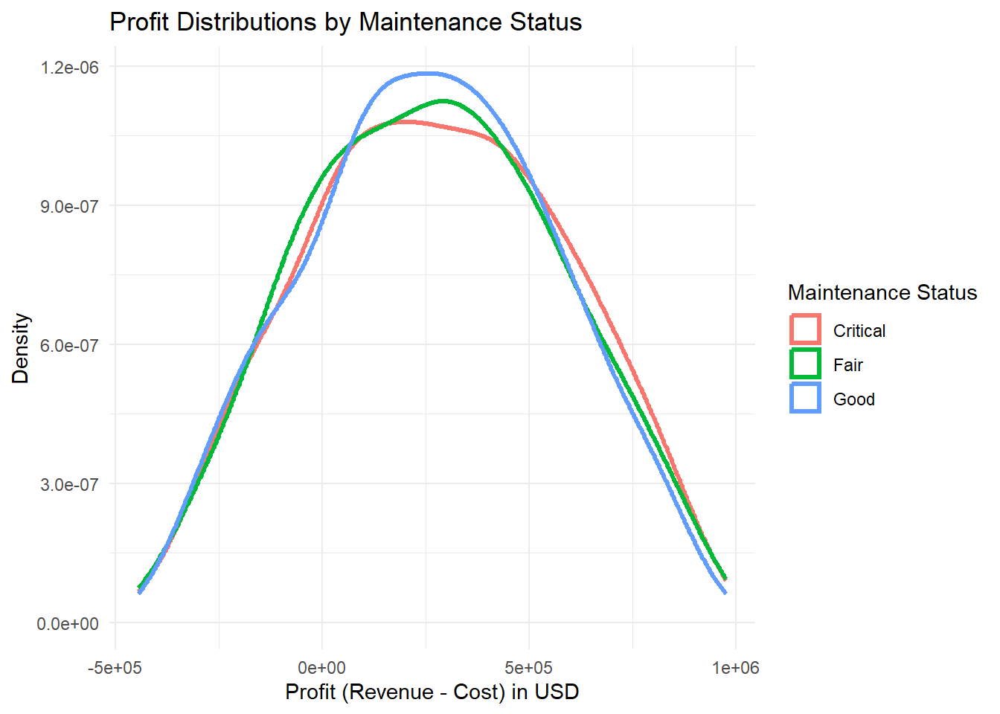
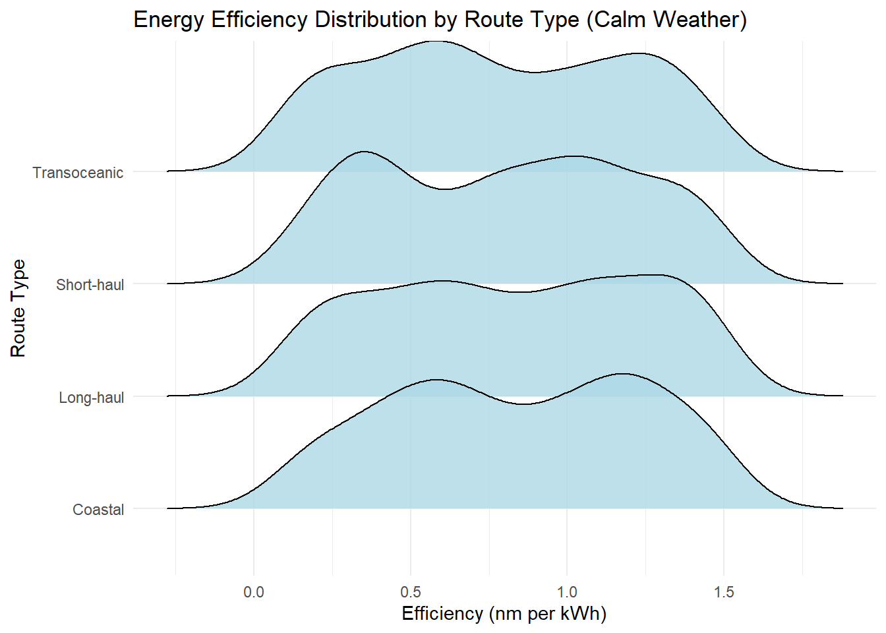
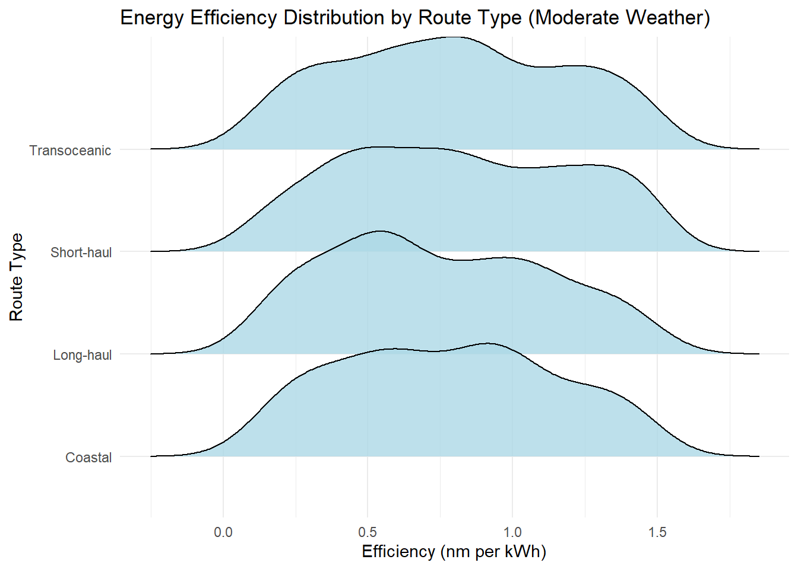
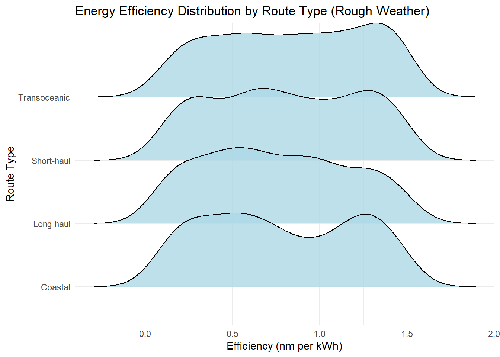
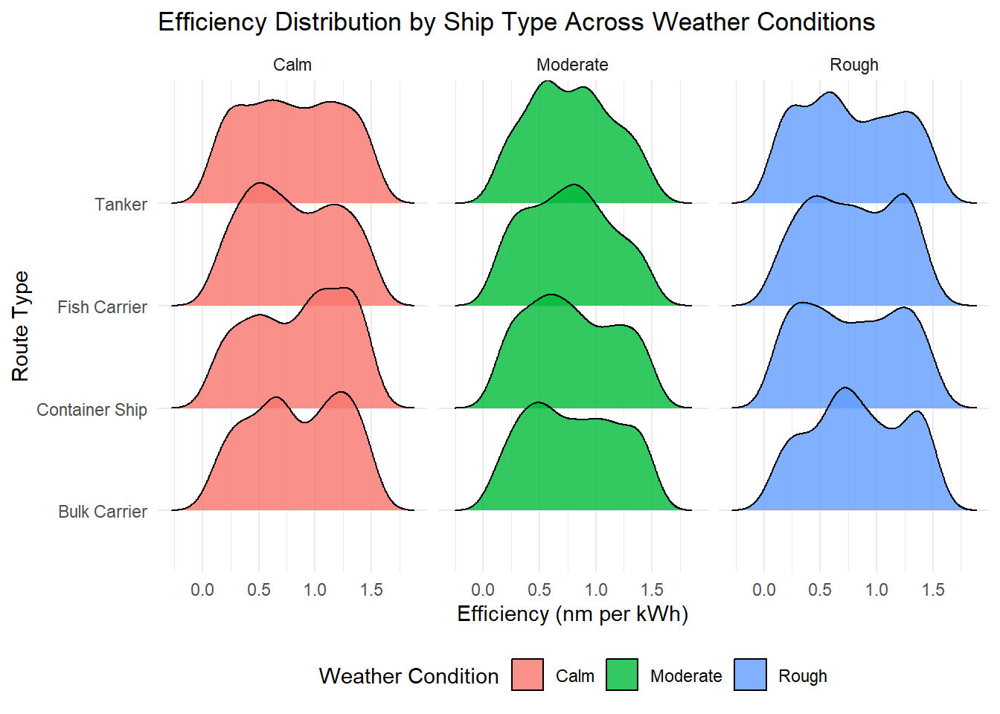

pacman::p_load(tidyverse, ggthemes, patchwork,
ggridges, ggdist, plotly,
corrplot)Take-home Exercise 1 - Ship Performance in the Gulf of Guinea
1. Overview
1.1 Setting the scene
The maritime sector is one of the most critical components of global trade, contributing significantly to economic growth and sustainability. It faces increasing pressure to optimize operations while maintaining safety and environmental standards. The Gulf of Guinea represents a significant maritime region where understanding vessel performance is crucial for operational success, reducing costs, and minimizing environmental impact.
1.2 Our task
As the graphical editor for an international media company, our task is to create insightful and informative visualizations that reveal meaningful patterns in ship performance data. Specifically, we aim to:
- Analyze and visualize energy efficiency distributions across different route types and weather conditions
- Examine maintenance patterns across different ship and route types
- Investigate operational cost distributions for various route categories
- Present these findings through clear, compelling visualizations using R’s ggplot2 and its extensions
Through this analysis, we seek to provide actionable insights that could benefit maritime stakeholders in optimizing their operations and making informed decisions about route planning, maintenance scheduling, and cost management.
2. Getting Started
2.1 Load packages
The R packages used in this take-home exercise are:
- tidyverse - (i.e. readr, tidyr, dplyr, ggplot2) A collection of core packages designed for data science, used extensively for data preparation and wrangling.
- ggthemes - Extra themes, geoms, and scales for ggplot2.
- patchwork - For preparing composite figure created using ggplot2.
- ggridges - For ridgeline plots that create the impression of a mountain range. They can be useful for visualising changes in distributions over time or space.
- ggdist - For visualisations of distributions and uncertainty.
- plotly - R library for plotting interactive statistical graphs.
- corrplot. - A graphical display of a correlation matrix or general matrix.
The code chunk below uses the p_load() function in the pacman package to check if the packages are installed in the computer. If yes, they are then loaded into the R environment. If no, they are installed, and then loaded into the R environment.
2.2 Import the data
The dataset (data/Ship_Performance_Dataset.csv) used in the exercise is the Ship Performance in the Gulf of Guinea retrieved from kaggle - Ship Performance Clustering Dataset.
The code chunk below imports the CSV file into R environment by using read_csv() function of readr package as ship_data.
#Reading the data into R environment
ship_data <- read_csv("data/Ship_Performance_Dataset.csv") 3. Data Overview
Using the glimpse() function, we see that the dataset consists of 2736 rows and 18 columns, with features categorized into numerical and categorical types. It also shows the column names, column type, and the first few entries of each column.
glimpse(ship_data)Rows: 2,736
Columns: 18
$ Date <date> 2023-06-04, 2023-06-11, 2023-06-18, 2023-06-2…
$ Ship_Type <chr> "Container Ship", "Fish Carrier", "Container S…
$ Route_Type <chr> "None", "Short-haul", "Long-haul", "Transocean…
$ Engine_Type <chr> "Heavy Fuel Oil (HFO)", "Steam Turbine", "Dies…
$ Maintenance_Status <chr> "Critical", "Good", "Fair", "Fair", "Fair", "F…
$ Speed_Over_Ground_knots <dbl> 12.59756, 10.38758, 20.74975, 21.05510, 13.742…
$ Engine_Power_kW <dbl> 2062.9840, 1796.0574, 1648.5567, 915.2618, 108…
$ Distance_Traveled_nm <dbl> 1030.9436, 1060.4864, 658.8741, 1126.8225, 144…
$ Draft_meters <dbl> 14.132284, 14.653083, 7.199261, 11.789063, 9.7…
$ Weather_Condition <chr> "Moderate", "Rough", "Moderate", "Moderate", "…
$ Cargo_Weight_tons <dbl> 1959.0179, 162.3947, 178.0409, 1737.3853, 260.…
$ Operational_Cost_USD <dbl> 483832.35, 483388.00, 448543.40, 261349.61, 28…
$ Revenue_per_Voyage_USD <dbl> 292183.27, 883765.79, 394018.75, 87551.38, 676…
$ Turnaround_Time_hours <dbl> 25.86708, 63.24820, 49.41815, 22.40911, 64.158…
$ Efficiency_nm_per_kWh <dbl> 1.4551789, 0.2903614, 0.4995945, 0.7029057, 1.…
$ Seasonal_Impact_Score <dbl> 1.4156533, 0.8856478, 1.4058132, 1.3707043, 0.…
$ Weekly_Voyage_Count <dbl> 1, 6, 9, 1, 8, 7, 3, 6, 8, 2, 9, 4, 3, 7, 7, 3…
$ Average_Load_Percentage <dbl> 93.76925, 93.89537, 96.21824, 66.19370, 80.008…3.1 Check for duplicates
Using the duplicated function, we see that there are no duplicate entries in the data.
ship_data[duplicated(ship_data),]# A tibble: 0 × 18
# ℹ 18 variables: Date <date>, Ship_Type <chr>, Route_Type <chr>,
# Engine_Type <chr>, Maintenance_Status <chr>, Speed_Over_Ground_knots <dbl>,
# Engine_Power_kW <dbl>, Distance_Traveled_nm <dbl>, Draft_meters <dbl>,
# Weather_Condition <chr>, Cargo_Weight_tons <dbl>,
# Operational_Cost_USD <dbl>, Revenue_per_Voyage_USD <dbl>,
# Turnaround_Time_hours <dbl>, Efficiency_nm_per_kWh <dbl>,
# Seasonal_Impact_Score <dbl>, Weekly_Voyage_Count <dbl>, …3.2 Check and handle missing values
We run below code to check for missing values and no output is generated indicating no missing values.
for(column_name in names(ship_data)) {
na_count <- sum(is.na(ship_data[[column_name]]))
if (na_count > 0) {
message("Column '", column_name, "' has ", na_count, " NA values.")
}
}Now, that we are done with the basic pre-processing steps, since we don’t want to further modify our dataset, we will start with the Exploratory Data Analysis.
4. Exploratory Data Analysis (EDA)
Before conducting EDA, we first examined the correlation between numerical variables to understand their relationships and guide our visualization strategy as can be seen below -
numeric_columns <- sapply(ship_data, is.numeric) # Identify numeric columns
ship.cor <- cor(ship_data[, numeric_columns]) # Compute correlation
options(repr.plot.width = 10, repr.plot.height = 10)
corrplot(ship.cor,
type = "lower",
tl.cex = 0.7)
The correlation matrix, as depicted in the figure, reveals that there is no strong correlation among the numerical variables. Most correlations are extremely weak - close to zero, indicating minimal linear relationships between these features.
Given this insight, we will not focus on visualizing numerical relationships, as they do not provide meaningful patterns. Instead, our analysis will shift towards exploring categorical variables or combinations of categorical and numerical attributes to derive more insightful trends in ship performance.
This approach ensures that our visualizations remain relevant and data-driven, helping us extract the most valuable insights from the dataset.
Note - For our visualizations, we will be filtering out the “None” category for all categorical variables since they won’t be adding much value to our insights.
4.1 Ship Performance and Maintenance Trends
4.1.1 Engine Type Preferences across different Route Types
# Filtering the dataset
ship_data_filtered <- ship_data %>%
filter(Engine_Type != "None", Route_Type != "None")
p <- ggplot(ship_data_filtered,
aes(x = Engine_Type, fill = Engine_Type)) +
geom_bar(position = "dodge", aes(text = after_stat(count))) +
facet_wrap(~Route_Type) + # Separate plots for each Route Type
theme_minimal() +
labs(title = "Distribution of Ships by Engine Type (Faceted by Route Type)",
x = "Engine Type",
y = "Count of Ships",
fill = "Engine Type") +
theme(axis.text.x = element_text(angle = 45, hjust = 1))
# Convert to an interactive plot with hover tooltips
ggplotly(p, tooltip = "text")Insights -
- The number of ships for each engine type appears relatively consistent across the four route types (Coastal, Short-haul, Long-haul, Transoceanic).
- Diesel and HFO-powered ships dominate across all routes, indicating their preference in most shipping operations.
- However, Steam Turbine usage is relatively higher in Long-haul and Transoceanic routes, suggesting that these engines might be better suited for extended voyages.
4.1.2 Maintenance Status Insights across Ship and Route Types

# Filter dataset for Ship Type (removing 'None')
ship_data_filtered1 <- ship_data %>%
filter(Maintenance_Status != "None", Ship_Type != "None")
# First bar chart (Ship Type vs. Maintenance Status)
p1 <- ggplot(ship_data_filtered1, aes(x = Ship_Type, fill = Maintenance_Status)) +
geom_bar(position = "dodge", width = 0.6) +
theme_minimal(base_size = 12) +
labs(title = "by Ship Type",
x = "Ship Type",
y = "Ship Count") +
theme(
axis.text.x = element_text(angle = 20, hjust = 1, size = 10),
legend.position = "top",
legend.text = element_text(size = 8),
legend.title = element_text(size = 9)
)
# Filter dataset for Route Type (removing 'None')
ship_data_filtered2 <- ship_data %>%
filter(Maintenance_Status != "None", Route_Type != "None")
# Second bar chart (Route Type vs. Maintenance Status)
p2 <- ggplot(ship_data_filtered2, aes(x = Route_Type, fill = Maintenance_Status)) +
geom_bar(position = "dodge", width = 0.6) +
theme_minimal(base_size = 12) +
labs(title = "by Route Type",
x = "Route Type",
y = "Ship Count") +
theme(
axis.text.x = element_text(angle = 20, hjust = 1, size = 10),
legend.position = "none" # Hide legend from second plot (since it's shared)
)
# Arrange the plots properly
final_plot <- (p1 | p2) +
plot_layout(widths = c(1.2, 1)) +
plot_annotation(
title = "Comparison of Ships on Maintenance Status",
theme = theme(plot.title = element_text(size = 16, face = "bold"))
)
# Display the final adjusted plot
print(final_plot)Insights -
By Ship Type:
- Fish Carriers seem to be performing the best, with a higher proportion of ships in “Good” condition.
- Container Ships and Bulk Carriers have more ships in “Critical” condition, indicating higher maintenance needs or susceptibility to operational stress.
- Tanker ships also appear to be well-maintained, with fewer ships in critical condition.
By Route Type:
- Short-haul and Transoceanic routes have a higher number of ships in “Critical” condition, suggesting that extreme voyage lengths (either short or long) lead to more wear and tear.
- Long-haul routes have a similar number of critical ships but also a higher number of well-maintained ships, indicating other influencing factors such as weather conditions.
- Coastal ships seem to have the best overall maintenance status, possibly due to easier access to regular servicing.
4.2 Financial Performance Across Operational and Maintenance Factors
4.2.1 Operational Cost Patterns Across Different Route Types

# Filtering out "None" values
ship_data_filtered <- ship_data %>%
filter(Route_Type != "None")
# Creating the faceted histograms with density curves
ggplot(ship_data_filtered,
aes(x = Operational_Cost_USD)) +
geom_histogram(aes(y = ..density..),
bins = 30,
fill = "steelblue",
color = "black",
alpha = 0.6) + # Histogram bars
geom_density(color = "red",
linewidth = 1.2,
adjust = 1.2) + # Density curve
facet_wrap(~Route_Type, scales = "free") + # Separate plots for each Route_Type
theme_minimal() +
labs(title = "Operational Cost Distribution by Route Type",
x = "Operational Cost (USD)",
y = "Density") +
theme(legend.position = "none") # No need for legend in faceted chartsInsights -
The histogram bars (blue) represent the frequency of operational costs, while the red line shows the density distribution. All route types show a fairly spread-out distribution of operational costs, indicating no extreme outliers.
Short-haul routes exhibit a uniform distribution, indicating relatively stable operational cost patterns. Long-haul routes show multiple peaks in cost distribution, suggesting that additional factors (such as fuel prices or route-specific expenses) may influence cost variability.
Coastal routes have a slightly left-skewed distribution, meaning that most ships operate at lower operational costs, likely due to shorter voyages and lower fuel consumption whereas Transoceanic routes have a higher density of ships in mid-to-high operational cost levels, confirming that these voyages tend to be the most expensive.
4.2.2 Impact of Maintenance Status on Profitability

# Filtering out "None" values and calculating profit
ship_data_filtered <- ship_data %>%
filter(Maintenance_Status != "None") %>%
mutate(Profit = Revenue_per_Voyage_USD - Operational_Cost_USD) # Compute Profit
ggplot(ship_data_filtered,
aes(x = Profit, color = Maintenance_Status)) +
geom_density(linewidth = 1.2, adjust = 1.2) + # Density curves
theme_minimal() +
labs(title = "Profit Distributions by Maintenance Status",
x = "Profit (Revenue - Cost) in USD",
y = "Density",
color = "Maintenance Status") +
theme(legend.position = "right") Insights -
- The graph shows overlapping probability density distributions of profit (revenue - cost) across different maintenance statuses (Critical, Fair, and Good). The bell-shaped distribution indicates that most profits are centered around a peak range, with fewer ships experiencing extreme profits or losses.
- Ships in “Good” maintenance condition (blue) have the highest peak, indicating that most well-maintained ships achieve a stable and predictable profit margin. Ships in “Fair” condition (green) follow a similar pattern but with slightly lower profit peaks, suggesting that maintenance quality plays a role in financial performance.
- Ships in “Critical” condition (red) exhibit a slightly widest spread on the right, with profits varying significantly. Some of these ships perform well, but it has the lowest profit peak amongst the 3.
- The left tail of the distribution indicates that some ships operate at a loss, regardless of their maintenance condition, highlighting potential inefficiencies in fleet management.
4.3 Efficiency Distribution Across Different Weather Conditions
4.3.1 Efficiency in Calm Weather by Route Type

# Filtering the dataset
ship_data_filtered <- ship_data %>%
filter(Weather_Condition == "Calm", Route_Type != "None")
# Ridgeline Plot
ggplot(ship_data_filtered,
aes(x = Efficiency_nm_per_kWh,
y = Route_Type)) +
geom_density_ridges(fill = "lightblue", alpha = 0.8, scale = 1.2) +
theme_minimal() +
labs(title = "Energy Efficiency Distribution by Route Type (Calm Weather)",
x = "Efficiency (nm per kWh)",
y = "Route Type") +
theme(legend.position = "none") Insights -
This ridgeline plot illustrates the energy efficiency distribution (nm/kWh) across different route types in calm weather. Transoceanic routes exhibit the widest spread, with peaks around 0.6 (lower efficiency, possibly due to difficult segments) and 1.3 (optimal efficiency, likely aided by favorable currents). Short-haul routes have a more concentrated distribution in comparison, with a lower peak near 0.4, potentially due to start-up delays or congestion, and a dominant peak at 1.1 nm/kWh, indicating typical cruising efficiency.
Long-haul routes display two peaks at 0.5 and 1.3, suggesting varying efficiency regimes—lower during cargo operations and higher during uninterrupted cruising. Coastal routes show the least variability, with peaks around 0.6 and 1.2, indicating more stable and predictable conditions. Overall, the efficiency ranges generally overlap across all route types, suggesting some commonality in operational parameters.
4.3.2 Efficiency in Moderate Weather by Route Type

# Filtering the dataset for relevant weather conditions & route types
ship_data_filtered <- ship_data %>%
filter(Weather_Condition == "Moderate", Route_Type != "None")
# Ridgeline Plot
ggplot(ship_data_filtered,
aes(x = Efficiency_nm_per_kWh,
y = Route_Type)) +
geom_density_ridges(fill = "lightblue", alpha = 0.8, scale = 1.2) +
theme_minimal() +
labs(title = "Energy Efficiency Distribution by Route Type (Moderate Weather)",
x = "Efficiency (nm per kWh)",
y = "Route Type") +
theme(legend.position = "none") Insights -
Transoceanic routes show a more consolidated distribution with a dominant peak around 0.8 nm/kWh, suggesting that moderate weather conditions may normalize efficiency levels across the route. Short-haul routes display a relatively consistent density between 0.4-0.8 nm/kWh, indicating more uniform operating conditions despite weather changes.
Long-haul routes exhibit a prominent peak around 0.5-0.6 nm/kWh, suggesting that moderate weather conditions might push efficiency towards the lower end of the spectrum. Coastal routes show a distinctive peak near 0.9 nm/kWh, with a more symmetrical distribution compared to calm weather conditions.
Unlike the bimodal trends seen in calm weather, moderate conditions tend to consolidate efficiency distributions, likely due to standardized operational adjustments made for such weather.
4.3.3 Efficiency in Rough Weather by Route Type

# Filtering the dataset
ship_data_filtered <- ship_data %>%
filter(Weather_Condition == "Rough", Route_Type != "None")
# Ridgeline Plot
ggplot(ship_data_filtered,
aes(x = Efficiency_nm_per_kWh,
y = Route_Type)) +
geom_density_ridges(fill = "lightblue", alpha = 0.8, scale = 1.2) +
theme_minimal() +
labs(title = "Energy Efficiency Distribution by Route Type (Rough Weather)",
x = "Efficiency (nm per kWh)",
y = "Route Type") +
theme(legend.position = "none") Insights -
Transoceanic routes maintain a relatively stable density until a notable peak around 1.4 nm/kWh, suggesting that despite rough conditions, these vessels can achieve high efficiency in certain segments. Short-haul routes demonstrate multiple small peaks, particularly at 0.6 and 1.3 nm/kWh, indicating varying efficiency levels possibly due to different operational phases or route segments in rough weather.
Long-haul routes show higher density in the 0.2-0.7 nm/kWh range, suggesting that rough weather conditions significantly impact their efficiency, pushing it towards the lower end of the spectrum. Coastal routes exhibit dense distribution in the 0.2-0.6 nm/kWh range with another small peak around 1.3 nm/kWh, indicating that while rough weather generally reduces efficiency, some coastal operations can still achieve higher efficiency levels in specific conditions.
4.3.4 Efficiency Across Weather Conditions by Ship Type

# Filtering the dataset
ship_data_filtered <- ship_data %>%
filter(Ship_Type != "None", Weather_Condition != "None")
# Ridgeline Plot for all weather conditions
ggplot(ship_data_filtered,
aes(x = Efficiency_nm_per_kWh,
y = Ship_Type,
fill = Weather_Condition)) + # Color fill based on Weather Condition
geom_density_ridges(alpha = 0.8, scale = 1.2) +
facet_wrap(~Weather_Condition) + # Separate plots for each Weather Condition
theme_minimal() +
labs(title = "Efficiency Distribution by Ship Type Across Weather Conditions",
x = "Efficiency (nm per kWh)",
y = "Route Type",
fill = "Weather Condition") +
theme(legend.position = "bottom") Insights -
Efficiency Patterns Across Weather Conditions:
- Calm Weather (Red): Efficiency distributions are more spread out, with some ships achieving higher efficiency (1.5+ nm per kWh).
- Moderate Weather (Green): The distributions narrow slightly, indicating more consistency in efficiency but with a peak shift towards the mid-range (0.6 - 1.0 nm per kWh).
- Rough Weather (Blue): Efficiency drops further, with fewer ships reaching high efficiency levels, and peaks shifting toward lower efficiency values.
Ship Type-Specific Observations:
- Tankers appear to be the least resistant to rough weather, generally maintaining moderate efficiency levels across all conditions.
- Fish Carriers surprisingly exhibit a low efficiency peak in calm weather and overall achieve only moderate efficiency levels across conditions.
- Container Ships and Bulk Carriers follow a similar trend, achieving high efficiency in calm weather but experiencing efficiency losses as conditions worsen—though not as severe as Tankers.
5. Summary and Conclusion
The visualizations provided insights into ship performance, maintenance trends, financial patterns, and energy efficiency across various route types and weather conditions.
Ship Performance and Maintenance Trends: Different ship types exhibit varying maintenance conditions, with Fish Carriers generally in better condition, while Container Ships and Bulk Carriers have more vessels in critical states. Route type also plays a role, as short-haul and transoceanic voyages show higher maintenance concerns, whereas coastal routes tend to have better-maintained ships.
Financial Performance Across Operations: Operational costs vary by route type, with coastal routes generally having lower expenses and transoceanic routes experiencing higher costs. Maintenance condition correlates with profitability, as well-maintained ships tend to achieve more stable financial performance, while ships in critical condition exhibit a wider range of profit outcomes.
Energy Efficiency Across Weather Conditions: Efficiency distributions shift based on weather conditions, with calm weather allowing for higher efficiency levels, while rough weather reduces overall performance. Different route types and ship types respond differently to these conditions, with transoceanic vessels showing broader efficiency variations and certain ship categories experiencing more pronounced efficiency declines in rough conditions.
The analysis highlights notable patterns in ship performance, maintenance needs, cost distributions, and efficiency variations. While no strong correlations were found between numerical variables, categorical attributes such as ship type, route type, and weather conditions played a significant role in shaping operational outcomes. These insights provide a clearer understanding of how different factors impact maritime efficiency, financial performance, and maintenance trends.